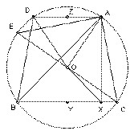

ABC is acute-angled. O is its circumcenter. X is the foot of the perpendicular from A to BC. Angle C ≥ angle B + 30o. Prove that angle A + angle COX < 90o
Solution

Take D on the circumcircle with AD parallel to BC. Angle CBD = angle BCA, so angle ABD ≥ 30o. Hence angle AOD ≥ 60o. Let Z be the midpoint of AD and Y the midpoint of BC. Then AZ ≥ R/2, where R is the radius of the circumcircle. But AZ = YX (since AZYX is a rectangle).
Now O cannot coincide with Y (otherwise angle A would be 90o and the triangle would not be acute-angled). So OX > YX ≥ R/2. But XC = YC - YX < R - YX ≤ R/2. So OX > XC.
Hence angle COX < angle OCX. Let CE be a diameter of the circle, so that angle OCX = angle ECB. But angle ECB = angle EAB and angle EAB + angle BAC = angle EAC = 90o, since EC is a diameter. Hence angle COX + angle BAC < 90o.

© John Scholes
jscholes@kalva.demon.co.uk
12 Aug 2001
Last corrected/updated 18 Oct 2002